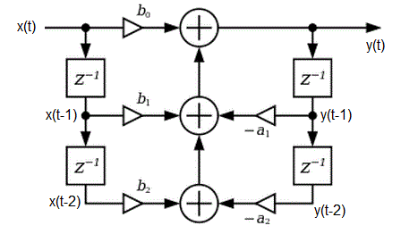
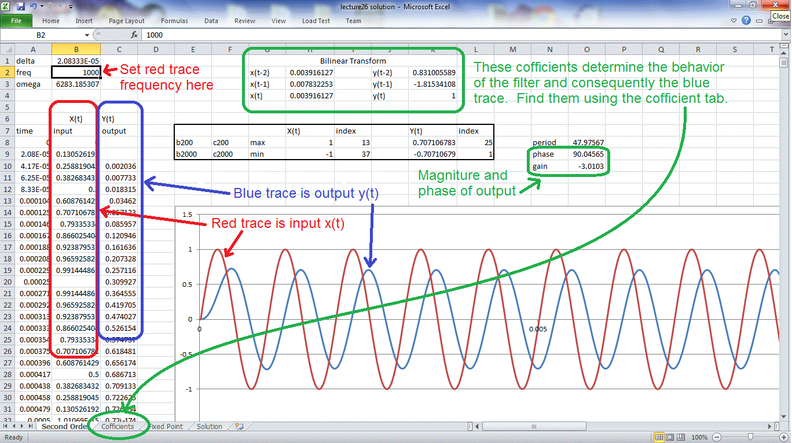
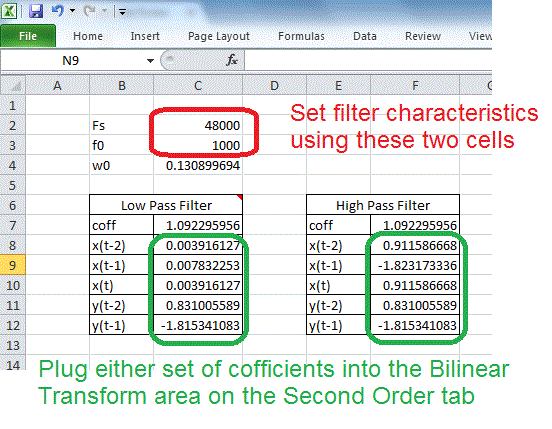
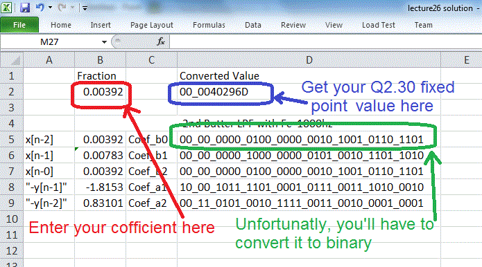
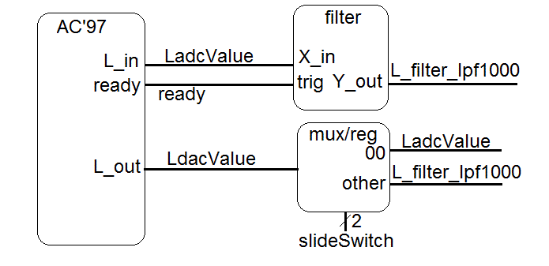

Digital Filter in Theory
In today's class we will be building filters. Our filters are called
Infinite Impulse Response filter (IIR) because if they are given an impulse
as an input signal, it will "ring" forever (i.e., have an infinite impulse
response). From within this broad
class of filters, we will be examining Biquadratic so names because
the system function consists of two quadratic equations.
You can build a digital version of the analog filters we discussed last
lecture. The process of calculating a filtered output y(t) is
described by the following imaged, a slightly modified version that I
copied from the Wikipedia page on
Digital Biquad Filters.

Some comments are in order.
- The input stream of digitized inputs is described by x(t). The blocks
labeled "z-1" is a delay block. We will call the nodes below each of the
blocks on the left side as x(t-1) and x(t-2), in order to indicate that they
are 1 and 2 time units older than x(t). Note that x(t-2) will get the value
of x(t-1), in 1 time unit from now. Likewise y(t-1) and y(t-2) are the old
outputs 1 and 2 time units ago.
- The triangles are multipliers, the two inputs to the multiplier are the input
to the triangle and the variable above or below.
- The circles with "+" inside of them are adders.
If you are following all of this, the you should be able to verify that the
output y(t) = x(t)*b0 + x(t-1)*b1 + x(t-2)*b2 - y(t-1)*a1 - y(t-2)*a2
Since the inputs x(t) are given, and the y(t)'s are found, then in
order to build this filter, we will need to know the coefficients
a2, a1, b2, b1, b0. Since this is not a course in digital signal
processing, we will use cookbook equations to derive these values
found in the excel file linked at the top of this file.
Digital Filter in Excel
In order to better understand how these filters operate, I've provided
excel file at the top of this page which contains three tabs. Each of
these tabs is explained in the sections below.
Second Order tab
The image below shows the major features of this tab. The frequency
of the input sinusoid is set by cell B2. The amplitude of the
sinusoid is calculated in column B8:B2000 and displayed as the red trace
in the graph.
The filter is defined by the coefficients in the green rectangle
H2:H4 and K2:K4. You will need to use the coefficients tab to determine
these values.
The output values, compute in column C8:C2000 are plotted as the blue
trace in the graph.

Coefficient tab
The coefficients tab allows you to specify the behavior of the filter
by specifying the corner frequency (denoted f0 in cell C3) and the
sampling frequency (denoted Fs in cell C2). I've provided two
calculators, one for low-pass filter and one for high-pass filter.
Choose which ever set you want to copy into appropriate cells in the
Second Order tab.

Fixed Point tab
In order to build the BiQuad filter in VHDL, you will need to
specify the coefficients using a fixed point representation.
So I created a handy tab to do just that. Plug in your
signed decimal value in the range [-2 to +1.99999] and
you will get the Q2.30 fixed point representation in blue.
I was too lazy to write an expression to convert it to
binary, so you will just have to do that part by hand to
get the values in green.

You may be asking yourself, how do I use these coefficients to
build a digital filter in VHDL? We read-on my intrepid friend.
Digital Filter in VHDL
I borrowed code from
eewiki
for the filter linked at the top of this web page. The filter is general
enough to accomodiate any filter specified by the cofficients used in the
excel file. the code snippet below show the component instantiation of
a filter block realizing a low pass filter with cutoff frequency of 1000Hz.
------------------------------------------------------------------
-- Low pass 2nd order butterworth filter with
-- f0 = 1000Hz, Fs = 48000Hz
------------------------------------------------------------------
left_filter_lpf500: entity work.IIR_Biquad(arch)
generic map(
Coef_b0 => B"00_00_0000_0100_0000_0010_1001_0110_1101", -- +0.003916127
Coef_b1 => B"00_00_0000_1000_0000_0101_0010_1101_1010", -- +0.007832253
Coef_b2 => B"00_00_0000_0100_0000_0010_1001_0110_1101", -- +0.003916127
Coef_a1 => B"10_00_1011_1101_0001_0111_0011_1010_0010", -- -1.815341083
Coef_a2 => B"00_11_0101_0010_1111_0011_0010_0001_0001") -- +0.831005589
port map (
clk => clk, -- Normal 100Mhz clock
n_reset => reset, -- Our normal active low reset
sample_trig => ready, -- This is the ready signal from the AC'97 wrapper
X_in => Ladc, -- The adc output from the ac'97 wrapper
filter_done => L_done, -- A status signal from the filter block
Y_out => Ladc_lpf1000); -- The 18-bit filtered output
The VHDL code in the file digitalFilterDemo.vhd (linked at top), needs to be
paired with the AC'97 wrapper to produce the block diagram shown below.
